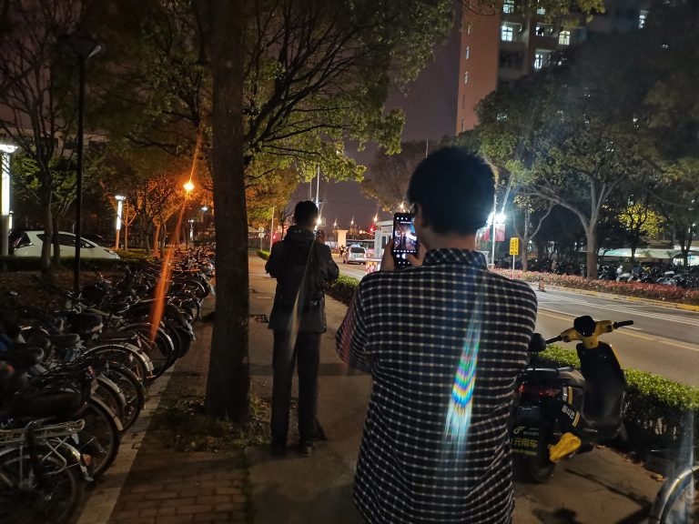

前言
看着朋友圈里大家都出去踏青，我这个三天宅学校的人属实羡慕坏了。（建议改名叫水明节，没去踏青不配把青放在标题）
不过好在我也不是什么都没干啦，清明这三天总体来说还是挺充实的，感觉确实是有点春意了。以此文记录一下。
主要内容是其实一些图片啦。
打疫苗

_猪肉检疫合格_
给疫苗服务站点的志愿者们点个赞，有提供好吃的阿华田三明治和牛奶防止我们空腹打疫苗。
打疫苗真的和蚊子叮一样，几乎没感觉。打完后我也没有啥不良反应，非常顺利的一次体验~
烤鸭饭

_还是大份的_
只能说：四餐，我的超人。
皮脆肉嫩，好吃不贵，下次还来。
一下午读一本书
_蛮怪的_
和一个好朋友在包图泡了一下午，看完了《献给阿尔吉侬的花》。
嗯，其实中途我去看牙医了，治好了困扰我多年的蛀牙，不过这不是重点。
故事真的讲得很好，就不剧透啦，有空可能会写个读后感。回来路上顺带买了点泡芙。

_有点小茶会的感觉_
整理自己

_键盘真是太适合藏污纳垢了_
洗了一下午键盘，用起键器把键帽一个个撬开洗的。虽然很累，洗完真的很有成就感。
以及淘了些提高生活质量的东西：书柜、屏幕灯等，（我的干花还没到，不然更好看），总算是制裁住了桌面不断增长的熵。

_某个午后，令人愉悦的读书环境_
唉，拍照技术太差了，这灯管给我拍傻了。
同学小聚

_这波啊，这波是他拍他拍他_
带好久没见的高中同学逛了SJTU一圈，最后去麦麦小吃了一顿。（经典结局）
嗯，感觉那时莫名有种对自己大学的自豪感。你交还蛮大的。